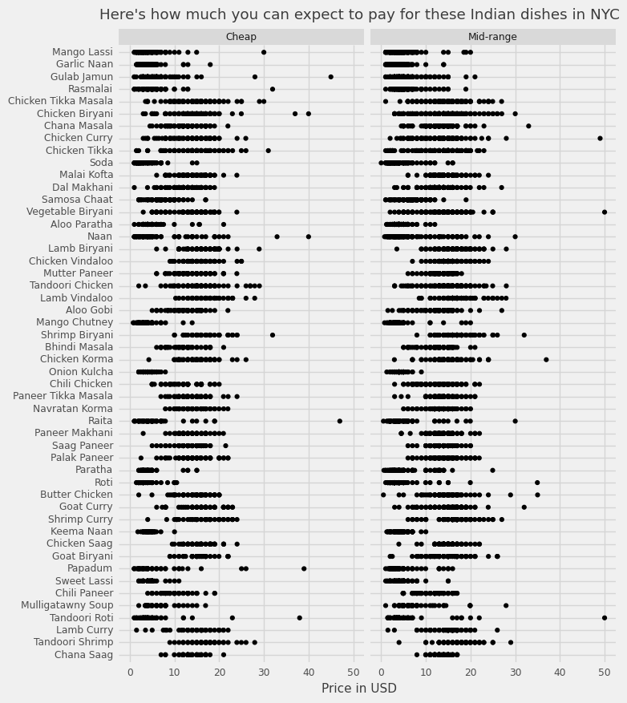
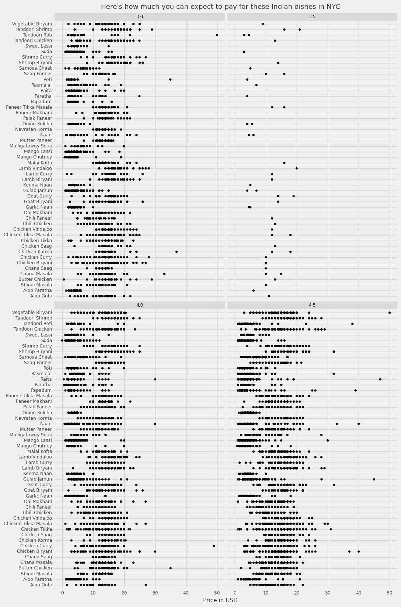

As a graduate student living in New York City, I often miss food from home. Indian food is delicious and can be time consuming to make. Unfortunately for us, the courseload at the J school means we rarely get time to cook Indian food. That leaves us with one option. Eating outside.
New York City is one of the world's most diverse cities for cuisine and there's no dearth of Indian restaurants. Jackson Heights and Murray Hill are neighbourhoods associated with Indian food. Are there other neighbourhoods too? What foods are most common on Indian restaurant menus, how diverse are there cuisines? Do they have dosas on their menu? We try finding out.
For the purposes of this story, we've used Yelp API to extract a list of restaurants associated with Indian cuisine in the Tri-state area.Because the spatiality of Indian cuisines is not restricted to the modern geographical nation state of India alone, restaurants with Pakistani, Bangladeshi, Nepali, Afghani and Sri Lankan Food also were considered for this analysis.
Most people who go into a restaurant consider three things : how popular it is, how highly rated it is and what kind of food one can expect at the restaurant. The following is a map of restaurants in the region. The bigger the size of the circle, the greater are the number of people who have reviewed the restaurant - a sign of the popularity of the restaurant. The color of the bubbles indicate the average rating score of the restaurant. The greener the bubble, the higher rated it is.

According to Yelp API ratings, there are only 3 restaurants with a really high number of reviews and a high rating : They're the Drunken Munkey in the Upper East Side, Bengal Tiger in Midtown, and Seva Canteen in Jackson Heights. So if you're going to rely on the wisdom of the website - you should definitely go eat there.
I was also interested in finding out what foods are one likely to come across on a menu at a restaurant in an Indian Restaurant. Turns out Mango Lassi is the most popular dish across restaurants in the region.Followed by Garlic Naan, Gulab Jamun, Rasmalai, and Chicken Tikka Masala.
I also looked at the cost of the top 50 popular items across price categories.

I tried looking at prices based on ratings. Are places with higher ratings also more expensive?

This is a work in progress. The code for the project is available here